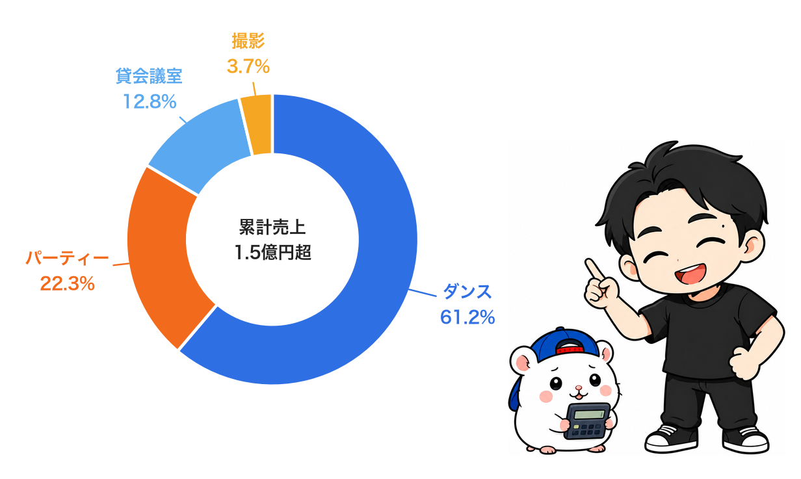
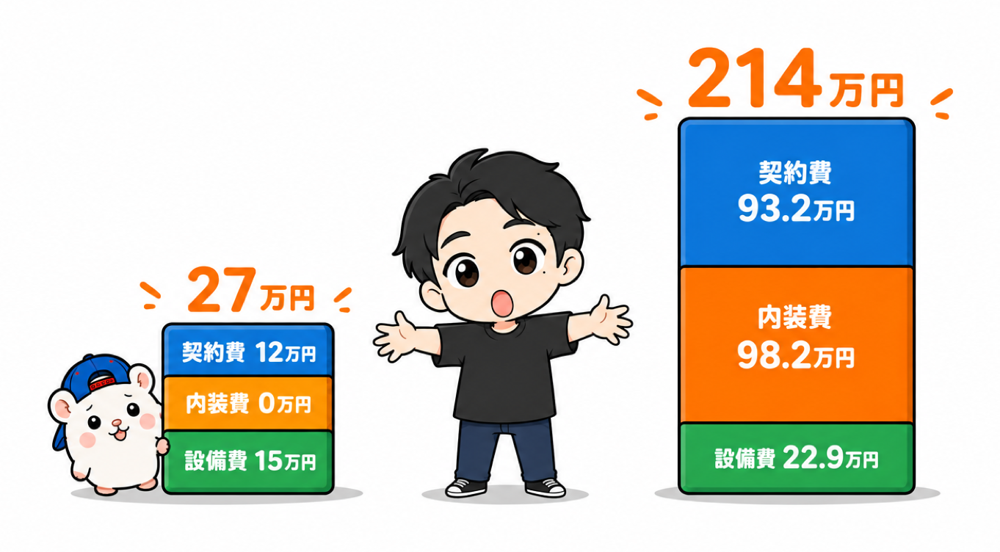
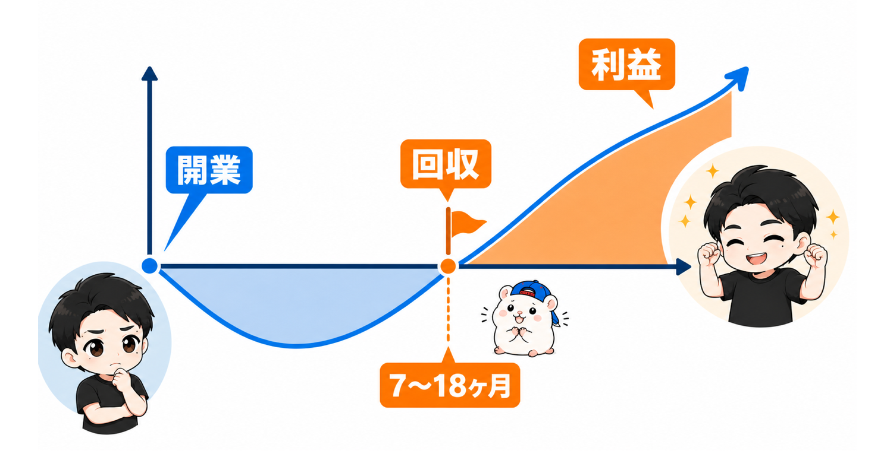
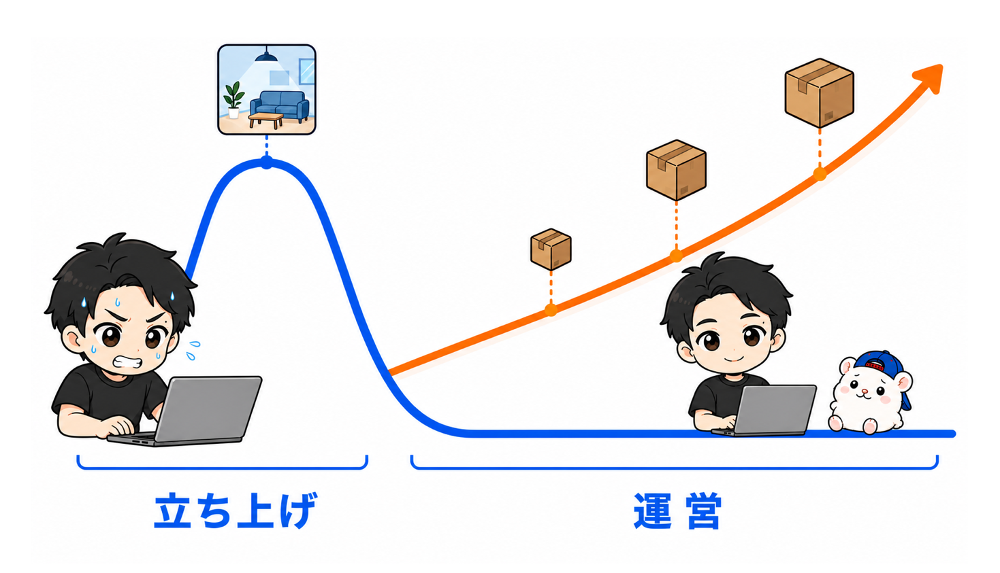
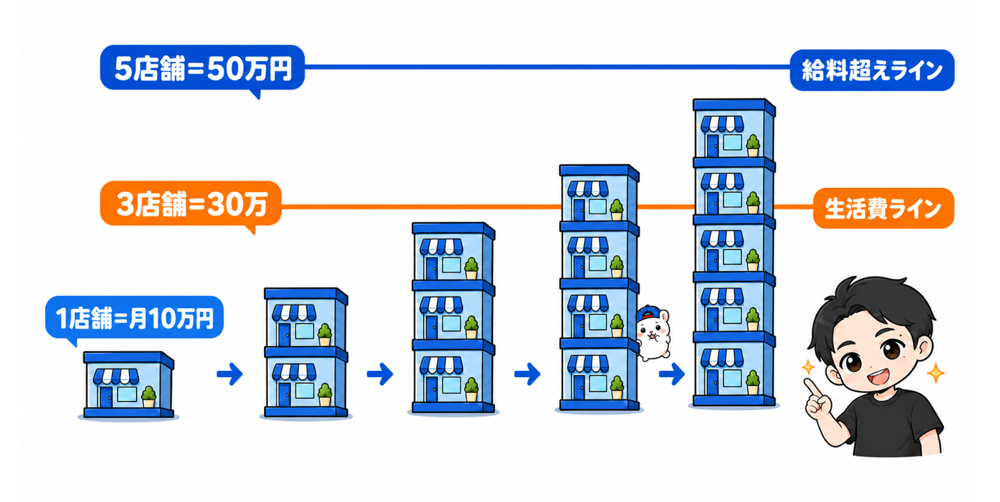
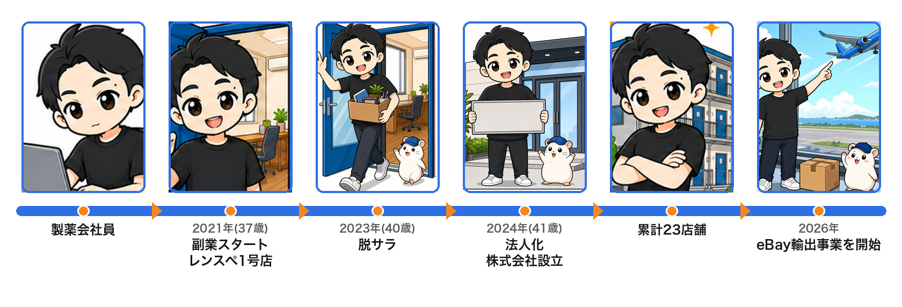
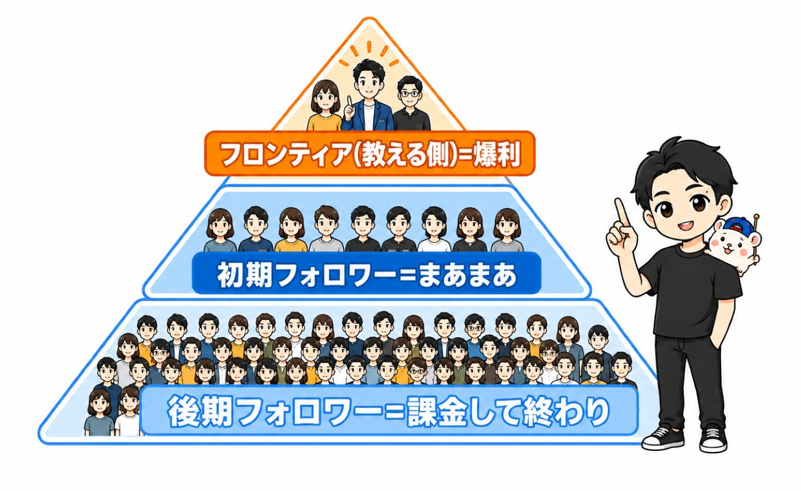
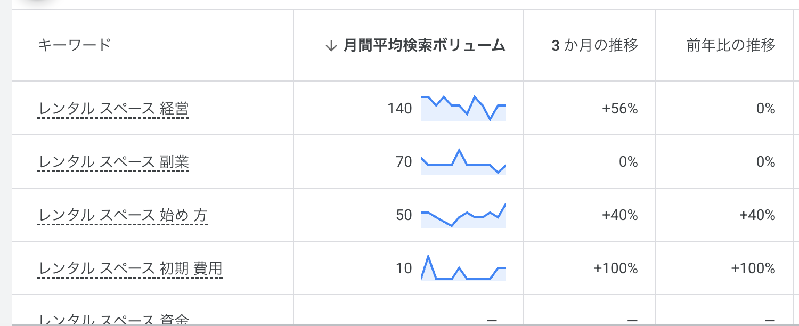
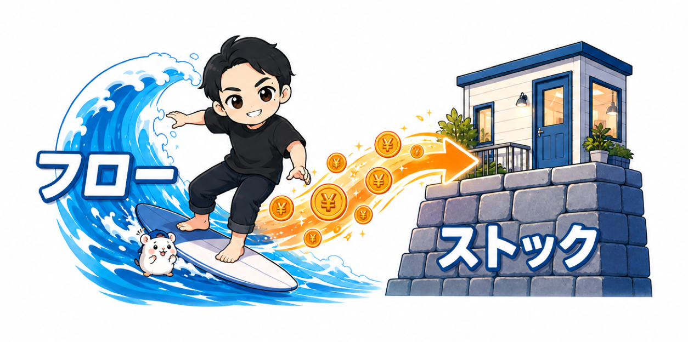

0-1. 実際、どれくらい儲かるのか
最初に、いちばん聞かれることから答えます。
レンタルスペースは、儲かるのか。
数字から、先に言います。
2021年3月に1店舗目を出してから5年。累計23店舗を出して、売上の合計は 1.5億円超 です。
店舗は1部屋を1店舗として数えています(同じ建物に複数の部屋がある店もあります)。

見てほしいのは、グラフの形です。
きれいな右肩上がりでは、ありません。
停滞している時期、閉店で凹んだ月、繁忙期の山。
この凸凹の理由を、教科書全体を通して一つずつ解説していきます。
1部屋あたり、月にいくら残るか
売上の合計より、あなたが知りたいのはこっちだと思います。
軌道に乗った部屋で、手残りは平均 月10万円前後 です。
内訳はジャンルで違います。小箱の貸会議室で月3〜5万円、ダンススタジオで月10〜20万円(ジャンル別の実測は第1部1-1)。
ここで言う「手残り」は、売上から家賃・光熱費・Wi-Fi・清掃外注などの店舗の費用を引いた額 です。
「月利」という言葉の定義が曖昧な教材が多いので、この教科書では常にこの定義で統一します。
直近の数字 — 月間粗利200万円超を6ヶ月連続
2025年10月から2026年3月まで、月間粗利200万円超を6ヶ月連続 で達成しました。
最高は2025年12月の 約288万円 です。
主戦場はダンスです
累計売上の 約6割(約9,200万円)は、ダンススタジオ が稼いでいます。

世の中のレンタルスペース教材は、パーティースペースと貸会議室の話がほとんどです。
ダンススタジオ——音を出すスペース全般——は、ほぼ空白地帯。
理由は簡単で、書ける人がいないからです。
この教科書では、勝ってきた方法を言語化し、その空白を埋めます(第1部・第2部)。
赤字物件ゼロ。ただし撤退6店舗は隠しません
23店舗出して、月次で恒常的に赤字だった物件はゼロ です。
これは腕自慢ではなく、構造の話です。
最大の固定費である家賃を、最初に低く抑える(第2部「安い家賃が正義」)。
すると損益分岐点が下がるので、大負けしにくい。
株やFXのように、一晩で溶けることもありません。
ただし、撤退は6店舗 しています。いま運営しているのは17店舗(ダンス5・撮影4・貸会議室3・パーティー5)です。
- 1店舗は、下の階からの騒音クレーム。利益は出ていた物件だったので、正直めちゃくちゃ悔しかったですが、撤退しました
- 5店舗は、ビルの再開発による撤退です。こちらは補償金を受け取っての退去でした
この2つの実録は、第2部(物件の見極め)と第8部(撤退のやり方)で、判断の過程ごと公開します。
失敗を隠している教材より、失敗の原価計算まで見せる教材 のほうが、あなたの役に立つはずです。
0-2. いくらかかって、いつ回収できるか
次に、お金の話です。
「初期費用はいくらかかるの?」と聞かれたら、ぼくはこう答えます。
一番安い店舗が27万円、一番高い店舗が214万円。
これは5年で23店舗を出してきた、実際の幅です。
広さも、ジャンルも、敷金礼金の月数も違うので、幅が出るのは当然です。
でも「いくら?」と聞かれたら、まずこの幅を知ってほしい。
初期費用の式は、3つだけ
契約関連のお金 + 内装 + 家具備品。
これだけです。
契約関連は、敷金・礼金・仲介手数料・保証会社・火災保険。このうち戻ってくるのは敷金だけ です。
内装は、ジャンルで桁が変わります。貸会議室ならほぼゼロ、ダンススタジオなら鏡だけで50万円を超えます。
家具備品は、ジャンル別の買い物リスト(付録⑬)に、ぼくが実際に買ったものと金額の目安を全部書きました。

27万円と214万円は、何が違うのか
最安の27万円は、敷金・礼金ゼロの小さな貸会議室。かかったのは、ほぼ家具備品だけです。
最高の214万円は、ダンススタジオ。鏡と工事で100万円近くかかりました。
この差は、ジャンルと物件で決まります。 だからジャンル選び(第1部)と物件選び(第2部)が、教科書の前半を占めています。細かい内訳は第4部で全部見せます。
回収は、いつか
初期費用が出たら、必ずセットで見るのが回収期間です。
実例を1つ。家賃6万円(管理費込み)の小箱パーティールーム。
- 初期投資: 約85万円(契約金40万円・工事費15万円・備品30万円)
- 1年間の累計利益: 126万円
- 回収期間: 10ヶ月(開業直後の単価が低い時期を含めた実測)
23店舗を見渡すと、多くの店舗は1年前後で回収 しています。
早い店舗で7ヶ月。2年かかった店舗もあります。

教材代とは別に、用意するお金
念のため書いておきます。
この教科書の代金は、開業費用には含まれません。
上の初期費用に加えて、開業してから軌道に乗るまでの家賃数ヶ月分 を運転資金として見ておいてください。
自分の候補物件でいくらになるかは、付録⑰「初期費用シミュレーター」でジャンルと条件を選ぶだけで概算が出ます。そのあと付録⑥で精密に計算する流れです(第3部・第4部)。
0-3. 自分にもできるのか — 会社員のまま始めて、脱サラまでの計算式
儲かるか、いくらかかるか、の次は「自分にできるか」だと思います。
先に結論を言うと、レンタルスペースは「ほったらかしの不労所得」ではありません。
正確に言うと、こうです。
最初だけ、ちゃんと大変。そのあとは、土台になる。
立ち上げ期に、何をするか
正直に並べます。
物件を探す。ぼくの実測で、30件問い合わせて内見に進めるのは1〜2件です。
内見に足を運ぶ。周辺の環境、建物の匂い、隣のテナント。現地でしか分からないことだらけです。
大家さんと交渉する。業種の許可、家賃、フリーレント。AIは代わりに言ってくれません。
設営する。家具を組んで、鏡を運んで、疲れます。
ここまでが、立ち上げ期(1〜3ヶ月)です。土日と平日の隙間時間で回せますが、しっかり働きます。
この教科書の大半は、この期間のためにあります。

運営期は、1店舗あたり1日数分
開業したあとは、こうなります。
予約の通知を確認して、たまに質問へ定型文で答える。
清掃は週1回・1回1,000〜1,500円で外注できます。
競合の予約状況チェック、売上の集計、稼働のモニタリング。ぼくはAIと仕組みに任せています。
つまりレンタルスペースは、こうなっている。
入口は、人の足でしかできない。運営は、AIと外注で回る。
売れるほど働く量が増える商売とは、ここが真逆です(0-4で書きます)。
レンタルスペースは、売れても働く量がほぼ増えません。
この構造の違いが、会社員を続けながら店舗を増やせた理由のすべてです。
その「運営を回す仕組み」は、第6部で作り方ごと渡します。
「できるか」の答え
だから「自分にできるか」への答えは、こうです。
立ち上げの数ヶ月、土日を使って動けるなら、できます。
特別な資格も、人脈も、話術も要りません。
ぼくは製薬会社の営業でしたが、不動産の知識はゼロから始めました。
必要なのは、物件を見る目と、契約前に収支を計算する習慣。
その2つを、この教科書の第2部と第3部で、手順と道具にして渡します。
会社員のうちに始めるほうが、圧倒的に有利です
「独立してから本気でやろう」と考える人がいます。
でも、レンタルスペースに関しては逆です。
第一に、信用力。物件を借りるときの保証会社の審査で、「安定した給与収入のある会社員」は圧倒的に通りやすい。「会社員」という肩書きは、辞めた瞬間に消える資産 です。使えるうちに、使ってください。
第二に、労働の前倒し構造が副業と噛み合う こと。立ち上げは土日と平日の隙間時間で回せて、運営期は1日数分なので本業と衝突しません。
第三に、完全に外注化できる こと。清掃も、顧客対応も、マニュアルさえ作れば渡せます。「自分にしかできない仕事」が構造的に残らないんですよね(第6部)。
事業として運営すれば、経費計上の仕組みも使えます(税制の詳細は税理士や税務署に確認してください)。
脱サラの計算式
0-1で書いたとおり、軌道に乗った1部屋の手残りは平均で月10万円前後です。
この「1部屋=月10万円」を基準にすると、脱サラが初めて「計画」になります。
- 月10万円の副収入 → 1部屋
- 月30万円(生活費レベル) → 3部屋
- 月50万円(給料超え) → 5部屋
ぼくはこの積み上げを実際にやって、給料を超えた時点で会社を辞めました。
精神論ではなく、足し算です。

初期費用は0-2の幅で、回収は1年前後。
回収したあとは、その利益がそのまま毎月積み上がります。
これは「投資」ではなく「小さな事業」です。物件を選び、内装を作り、集客する労働が乗っている分のリターン。
だからこそ、その労働部分を正しくやれば再現できます。
この計算式を自分の物件で成立させる手順が、この教科書です。
0-4. ぼくは何者か
ここで、書いている人間のことを短く。

もともと製薬会社の営業で、18年。
「40歳までに独立する」と決めて、副業を始めました。
最初に伸びたのが、eBay輸出です。
大きくて重い家電を、フリマアプリから仕入れる無在庫販売。
最大で月の利益が200万円まで行き、外注さんは20人を超える体制になりました。
でも、崩壊しました。
売上が伸びるほど、仕入れ・検品・梱包・発送・顧客対応が雪だるま式に増えていく。
大型商品の輸送破損と全額返金が続いて、利益が削られる。
月200万の月も、ぼくは会社で品出しをしながら、昼休みに返品対応をしていました。
あれは「儲かる副業」ではなく、2つ目の仕事 でした。
2年で撤退。トータルでは、ほぼトントンです。
この失敗が、いまも使っている判断基準になりました。
売上が伸びるほど自分の労働が増えるビジネスは、会社員の副業には向かない。 必要なのは、売上と労働が切り離されている構造。
この目で見直したとき、レンタルスペースの景色が変わりました。
レンタルスペースを始めたのは、約5年前。
不動産サイトからノリで問い合わせた最初の物件が、そのまま1号店になりました。
初期投資約90万円を7ヶ月で回収して、5年たった今も毎月15万ほどの利益を出し続けています。
正直、運がよかっただけです。
だからこの教科書では、その運を言語化して再現性に変える方法を書きます。
どんな物件なら成立するのか。どこで妥協してはいけないのか。
そこから店舗を増やし、会社の給料を超えて、脱サラ、法人化しました。
物販とレンタルスペース、両方を実際にやった人間として書いています。 だから、どちらが会社員の副業に向くかを、比較で語れます。
0-5. なぜ今、レンタルスペースなのか
ここで、この教科書の考え方の土台を、短く。
いま売れている副業は、ぜんぶAIと相性がいい
AI社員、AIエージェント、AI動画、AI画像生成。
いま売れている副業教材は、ぜんぶAIです。
そんな時代に、この教科書は「物件を探して、内見に足を運んで、大家さんと交渉して、鏡を運ぶ商売」を教えます。
時代遅れでしょうか。
ぼくの答えは、逆です。
「AIと相性が悪いからこそ、価値がある。」
AIと相性がいい=誰でもマネできる
ぼくは物販(海外向けの無在庫販売)を再開して、驚きました。
以前は外注さん20人超でやっていた仕事が、梱包発送以外すべて、AI1アカウントでできるようになっていた。
すごい時代です。
でも、裏返すとこうなります。
ぼくが楽になったこのやり方は、明日から誰でもできる。
参入障壁だったリサーチ力も、ツールも、外注管理のノウハウも、全部AIが溶かした。
「AIと相性がいい」という言葉のウラの意味は、「参入障壁が消えた」 です。
参入者が増えて、競争が激しくなって、利益が薄くなる。
2026年9月、日経が「フリーランスから正社員へ、AI台頭で回帰の動き」と報じました。案件が3年前の3分の1になったエンジニアの話です。労働を売る働き方は、AIと奪い合いになる。

AIと相性がいい事業のお金は、三層 に分かれます。
波にいち早く乗って「教える側」に回ったフロンティア。ここに利益が集中する。
空いているうちに実行した初期フォロワー。まあまあ稼げる。
そして、市場が混んでから教材を買って入る大多数。先駆者に課金して終わることが多い。
問題は、層です。 流行りきってから、みんなと同じことをやる動き方が、いちばん危ない。
面倒くささが、堀になる
だから事業を選ぶ基準に、1つ足してください。
その事業の面倒くささは、AIで消えるか?
消えるなら、その楽さはライバルの楽さでもある。
消えないなら、それはあなたを守る堀になる。
レンタルスペースの入口——物件探し、内見、交渉、設営——は、AIがどれだけ進化しても消えません。
数字でも見えます。Googleキーワードプランナーで調べると、「AI 副業」の検索は月間9,900回。「レンタルスペース 副業」は月間70回 です(2026年8月26日実測)。

検索回数には大きな差があります。ぼくは、レンタルスペースを副業として検討する入口は、まだ少ないと見ています。
それでいて、借りたい側の需要は膨大にある。
やる人が少なくて、使う人は多い。
この非対称が、面倒くささの内側に広がっている市場です。
二刀流 — 土台を作ってから、波に乗る
だからぼくのスタンスは「AIから逃げる」ではなく、食う側に回る です。
AIと相性がわるい事業で、長く稼ぐ土台を作る。
土台が生んだ時間と現金で、AIと相性がいい事業の波に、初期フォロワーとして乗る。
順番は、レンタルスペースが先です。
物販は手を止めたら売上も止まるフロー型。レンタルスペースは箱が働くストック型。
立ち上げが終わったレンタルスペースは、時間が余ります。何もしない日が2〜3日続くことも普通です。
その余った時間で、2つ目の事業をやる。

0-6. この教科書で何を学べるか(そして、なぜ薄くないか)
全9部・約11万字・付録15点。
量は書きましたが、あなたが知りたいのは「中身が自分の役に立つか」だと思います。
歩き方 — 9部で、開業から出口まで
- ジャンルを決める(第1部)— 資金・住まい・性格に合う戦場を選ぶ
- 物件を探す(第2部)— 勝負の8割はここ。「安い家賃が正義」
- 収支をシミュレーションする(第3部)— ベンチマーク店舗を実測して、出店前に答え合わせを済ませる
- 立ち上げる(第4部)— 初期費用と回収の実際
- 集客する(第5部)— ポータルで初速をつけ、手数料35%から3.5%へ脱出する
- 仕組みで回す(第6部)— 外注化とAIで、実働1日数分へ。0-3の「運営はAIと外注で回る」をここで回収します
- 数字で経営する(第7部)— 稼働率と単価を読み、価格で利益を作る
- 増やす・畳む(第8部)— 2店舗目のGO判断から、撤退・出口まで
これから始める方は、第1部から順番に。
すでに運営中の方は、第5部・第6部・第7部から読んでもらって構いません。
各部に1つずつ、ここでしか読めないもの
ノウハウの一般論は、無料のブログや動画で十分に手に入ります。
だからこの教科書では、ぼくが実際にやって、数字が残っているもの だけを書きました。部ごとに1つ挙げます。
- 第1部: 4ジャンルの実測比較。ダンススタジオが累計売上の6割を稼いだ理由と、撮影スタジオで唯一苦戦した話
- 第2部: 不動産屋に送った問い合わせ文の実物と、30件送って内見1〜2件になる現実の数字
- 第3部: 競合店舗の予約カレンダーを毎日見て、売上を逆算する手順。ぼくは13店舗を調べました
- 第4部: 27万円と214万円、両方の初期費用の内訳(この第0部で見せたもの)と、融資の資料の作り方
- 第5部: Google広告の実測データと、ポータルの手数料35%から自社予約3.5%へ移す道筋
- 第6部: 清掃外注さんの契約書ひな形と、報告アプリ。ぼくの店で実際に回っているもの
- 第7部: 赤字になりかけた店舗を、損益分岐の計算で立て直した実録
- 第8部: 再開発で5店舗を畳んだときの判断と、補償を受けて退去するまでの流れ
付録15点は、使う場面で並べました
付録は「おまけ」ではなく、本文の手順をそのまま実行するための道具です。
- 物件を探すとき: 物件判定ツール(athomeのURLを入れると◎○△✕で即判定)・問い合わせ文テンプレ・内見チェックリスト
- 収支を確かめるとき: 競合調査ツール・利益シミュレーションツール・初期費用シミュレーター・使い方動画
- 開業するとき: ジャンル別の発注リスト・開業チェックリスト・室内掲示物テンプレ55種
- 運営するとき: トラブル対応の話法集・定期利用の申込フォームひな形・清掃外注の契約書ひな形・清掃報告アプリ「ほうこ君」
- 全部を通して: 教科書まるごとAI読み込みファイル
本文をAIに読ませる、という使い方
最後の1つを補足します。
この教科書の全文は、AIに読み込ませるためのファイルとしても付けています(付録⑫)。
ChatGPTやClaudeに読ませれば、「家賃12万円のこの物件、回りますか?」「清掃の外注はいくらから?」と、自分の条件で質問できます。
23店舗ぶんの判断基準を、自分専用の相談相手にする使い方です。
AIが答えを保証するわけではありません。判断はあなたがします。でも、11万字を毎回めくり直す必要はなくなります。
0-7. フランチャイズ・開業支援・独学と、この教科書
レンタルスペースの始め方は、大きく3つあります。
どれが正解、という話ではありません。向く人が違います。
← 比較表は横にスクロールできます →
| 比べること | FC・開業支援 | この教科書 | 完全独学 |
|---|---|---|---|
| 費用 | 加盟金150〜330万円。別途、物件・内装などの開業費用 | 教材代のみ。別途、開業費用 | 教材代なし。調査や道具は自分で用意 |
| 伴走 | 支援の内容・期間は契約による | 本文と付録で自分で進める。質問窓口あり | 自分で調べ、判断する |
| 道具 | 提供内容はサービスによる | 付録15点(ツール・アプリ・ひな形) | 探す・作る・個別に買う |
| 向く人 | 人の支援を受けながら進めたい人 | 実践者の手順と道具を使って、自分で進めたい人 | 調査や試行錯誤にも時間を使える人 |
FCが向く人も、いる
正直に書きます。
資金に余裕があって、時間がない人 には、FCや開業支援が合うことがあります。
物件の紹介、交渉の代行、開業までの伴走を、お金で買う。それ自体は合理的です。
ただし、加盟金を払っても、物件を見る目と、収支を計算する習慣は、自分の中に残りません。
2店舗目からは、また誰かに頼ることになります。
この教科書が向く人
自分で物件を見て、自分で計算して、自分で決めたい人 です。
ぼくが5年かけて作った手順と道具を、そのまま使ってください。
代わりに、内見に行くのも、大家さんと話すのも、あなたです。
この教科書には、物件紹介も、交渉の代行も、個別の伴走も含みません。
そのぶん、価格は加盟金とは桁がちがいます。
0-8. 損をしないために
高い買い物ですから、期待値のズレが一番もったいない。
買う前に、これだけは確認してください。
この教科書で手に入るもの
- レンタルスペース経営の全工程(ジャンル選定→物件→収支シミュレーション→立ち上げ→集客→運営→数字の経営→拡大と出口)を、実体験と実データだけで解説したもの
- 5年・累計23店舗分の数字そのもの。売上の月次推移、赤字になりかけた店舗を立て直した損益分岐の計算、Google広告の実測データまで、家賃などの丸め処理を除いてほぼそのまま見せます
- 明日から使える道具一式(0-6の付録15点)
この教科書が約束しないこと
- 「不労所得で楽して儲かる」とは言いません。立ち上げはしっかり手がかかります(そのぶん、立ち上げ後は驚くほど手離れします)
- 「誰でも必ず儲かる」とも言いません。物件選びを間違えれば普通に赤字になります。だからこそ物件と収支シミュレーションの部(第2部・第3部)が分厚くなっています
- コンサルや個別サポートの勧誘はしません。この教科書はこれ1つで完結です。質問は購入者フォームで受け付けて、回答はFAQとして全員に還元します
- 同じ地域・同じジャンルで出店すれば、買った人同士が競合になる可能性はあります。エリアの独占は約束できません
受け取り・更新・返金
- 改訂は無料 です。内容を更新したら、購入者にメールで案内します
- 返金 は、デジタルコンテンツのため原則できません。受け取りリンクが開けないなどの不具合は対応し、解決できない場合は返金します
- 価格 は予告どおりに上げます。3部売れるごとに2,000円ずつ、定価まで。先に買った人に追加の請求はありません
こういう人は、買わないでください
3つだけ書きます。
- 内見に行く時間が、これから数ヶ月まったく取れない人。 入口は人の足でしかできません。時間ができてから買ってください
- 開業費用と運転資金を、まだ用意できない人。 教科書を読んでも、物件は借りられません。0-2の幅を見て、先にお金の計画を
- 物件探しや交渉を、誰かに代わってほしい人。 それはFCや開業支援の仕事です。0-7を見て、そちらと比べてください
この3つに当てはまらないなら、この先を読んでください。
ここから先は、有料です
第0部は、ここまで。
儲かるか、いくらかかるか、自分にできるか、誰が書いているか、何が手に入るか、ほかと何がちがうか、損をしないか。
買う前に気になることには、全部答えたつもりです。
この先の第1部から第8部は、それをあなたの物件で成立させるための手順と道具です。
それでは第1部、ジャンル選定から始めます。
あなたが最初に決めるべきことは、「どの土俵で戦うか」です。